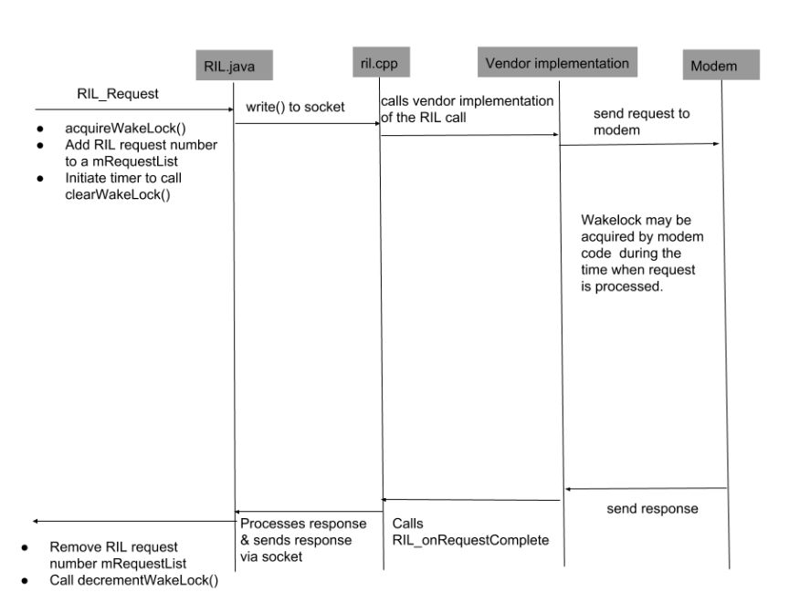
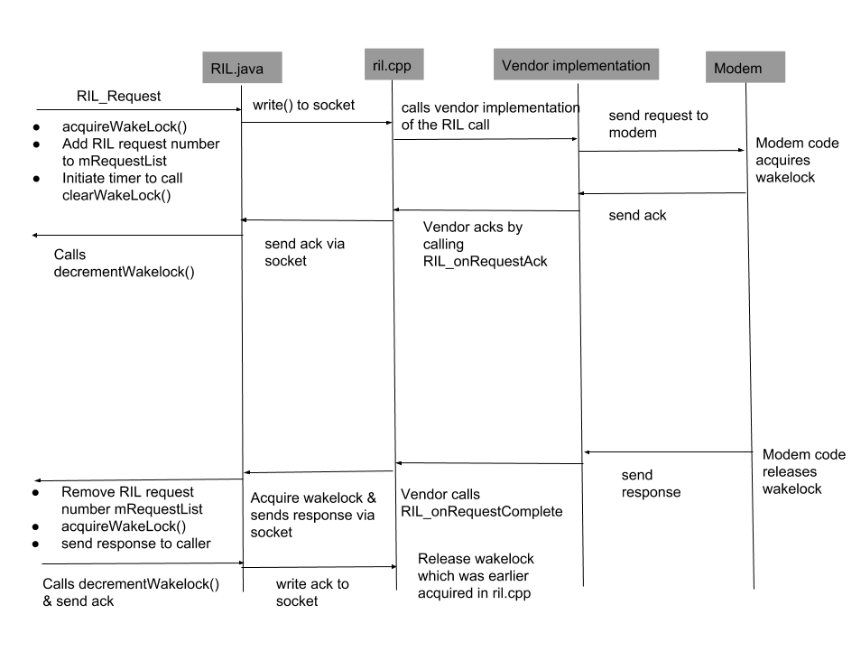
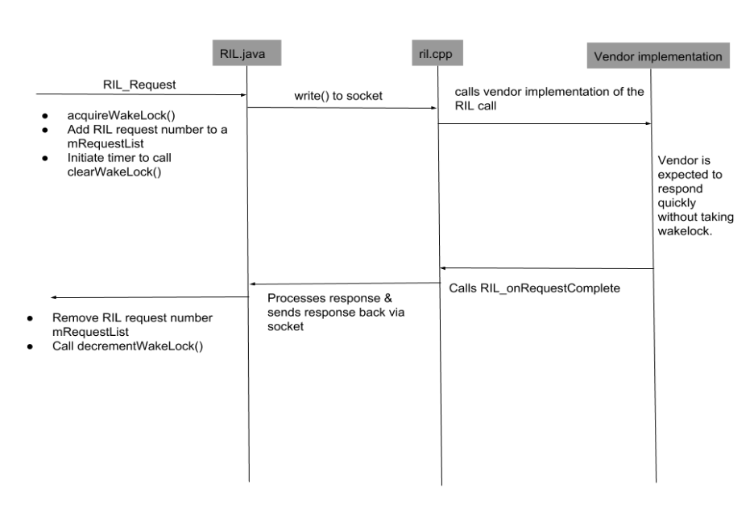
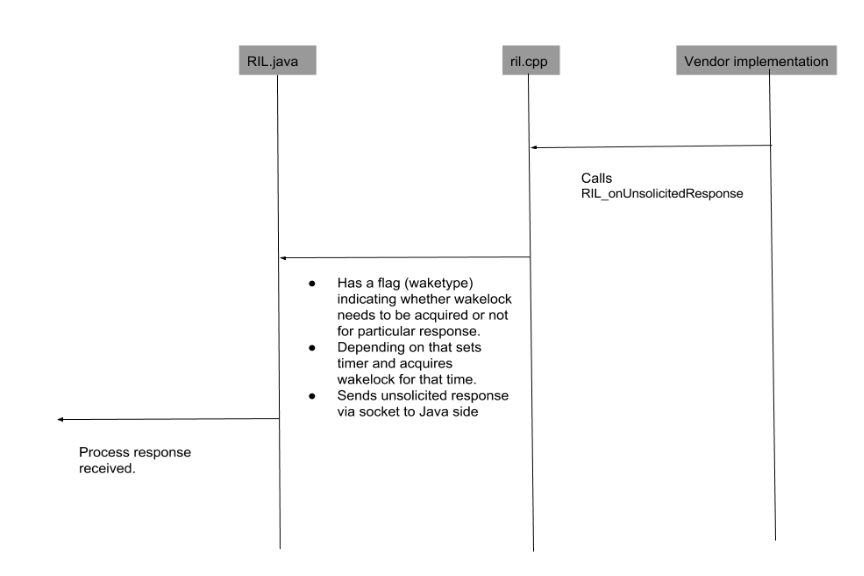
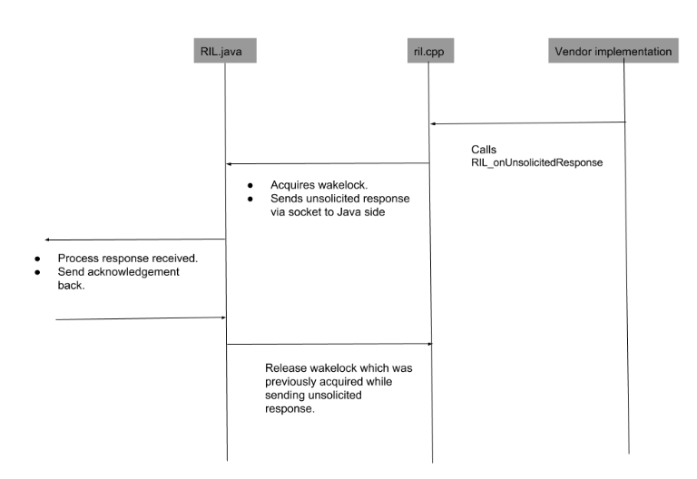

Android 7.0 included a refactoring of the Radio Interface Layer (RIL), using a set of subfeatures to improve RIL functionality. Partner code changes are required to implement these features, which are optional but encouraged. Refactoring changes are backward compatible, so prior implementations of the refactored features continue to work.
The following subfeatures are included in the RIL refactoring feature. You can implement any or all of the subfeatures:
GENERIC_FAILURE code. This enhances error
troubleshooting by providing more specific information about the cause
of errors.Documentation for RIL versioning is also in code comments in https://android.googlesource.com/platform/hardware/ril/+/master/include/telephony/ril.h.
The following sections describe how to implement the subfeatures of the RIL refactoring feature.
Almost all RIL request calls can return the GENERIC_FAILURE
error code in response to an error. This is an issue with all solicited
responses returned by the OEMs. It is difficult to debug an issue from
the bug report if the same GENERIC_FAILURE error code is
returned by RIL calls for different reasons. It can take considerable time
for vendors to even identify what part of the code could have returned a
GENERIC_FAILURE code.
OEMs should return a distinct error code value associated
with each of the different errors that are currently categorized as
GENERIC_FAILURE.
If OEMs do not want to publicly reveal their custom error codes, they may
return errors as a distinct set of integers (for example, from 1 to x) that
are mapped as OEM_ERROR_1 to OEM_ERROR_X. The
vendor should make sure each such masked error code returned maps to a unique
error reason in their code. The purpose of doing this is
to speed up debugging RIL issues whenever generic errors are returned
by the OEM. It can take too much time to identify what exactly caused
GENERIC_FAILURE, and sometimes it's impossible to figure out.
In ril.h, more error codes are
added for enums RIL_LastCallFailCause and
RIL_DataCallFailCause so that vendor code avoids returning
generic errors like CALL_FAIL_ERROR_UNSPECIFIED and
PDP_FAIL_ERROR_UNSPECIFIED.
RIL versioning is not accurate enough. The mechanism for vendors to report their RIL version is not clear, causing vendors to report an incorrect version. A workaround method of estimating the version is used, but it can be inaccurate.
There is a documented section in ril.h describing what a
particular RIL version value corresponds to. Each
RIL version is documented, including what changes correspond
to that version. Vendors must update their version in code when making
changes corresponding to that version, and return that version while doing
RIL_REGISTER.
Timed wakelocks are used in RIL communication in an imprecise way, which negatively affects battery performance. RIL requests can be either solicited or unsolicited. Solicited requests should be classified as one of the following:
RIL_REQUEST_GET_SIM_STATUS.RIL_REQUEST_QUERY_AVAILABLE_NETWORKS.Follow these steps to implement redesigned wakelocks:
Here are some things to consider while making that decision:
For implementation details of the functions used in the
following diagrams, see the source code of ril.cpp:
acquireWakeLock(), decrementWakeLock(),
clearWakeLock()

If the RIL solicited response is expected to take considerable time (for
example, RIL_REQUEST_GET_AVAILABLE_NETWORKS), then wakelock
is held for a long time on the Application processor side, which is a
problem. Also, modem problems result in a long wait.
In this scenario, wakelock equivalent is held by Modem code (RIL request and asynchronous response back).

As shown in the above sequence diagram:
ril.cpp over a socket. ril.cpp then
releases the wakelock that was acquired in step 3.Note that the wakelock timeout duration for the request-ack sequence would be smaller than the currently used timeout duration because the ack should be received back fairly quickly.
In this scenario, wakelock is not held by modem and response is quick (synchronous RIL request and response).

As shown in the above sequence diagram:
acquireWakeLock() on the
Java side.decrementWakeLock() is called, which decreases wakelock counter
and releases wakelock if the counter value is 0.Note that this synchronous vs. asynchronous behavior is hardcoded for a particular RIL command and decided on a call-by-call basis.

As shown in the above diagram, RIL unsolicited responses have a wakelock type flag in the response that indicates whether a wakelock needs to be acquired or not for the particular response received from the vendor. If the flag is set, then a timed wakelock is set and response is sent over a socket to the Java side. When the timer expires, the wakelock is released.
The timed wakelock illustrated in Scenario 2 could be too long or too short for different RIL unsolicited responses.

As shown, the problem can be solved by sending an acknowledgement from
the Java code to the native side (ril.cpp), instead of holding
a timed wakelock on the native side while sending an unsolicited response.
The following sections describe how to validate the implementation of the RIL refactoring feature's subfeatures.
After adding new error codes to replace the GENERIC_FAILURE
code, verify that the new error codes are returned by the RIL call instead
of GENERIC_FAILURE.
Verify that the RIL version corresponding to your RIL code is returned
during RIL_REGISTER rather than the RIL_VERSION
defined in ril.h.
Verify that RIL calls are identified as synchronous or asynchronous.
Because battery power consumption can be hardware/platform dependent, vendors should do some internal testing to find out if using the new wakelock semantics for asynchronous calls leads to battery power savings.